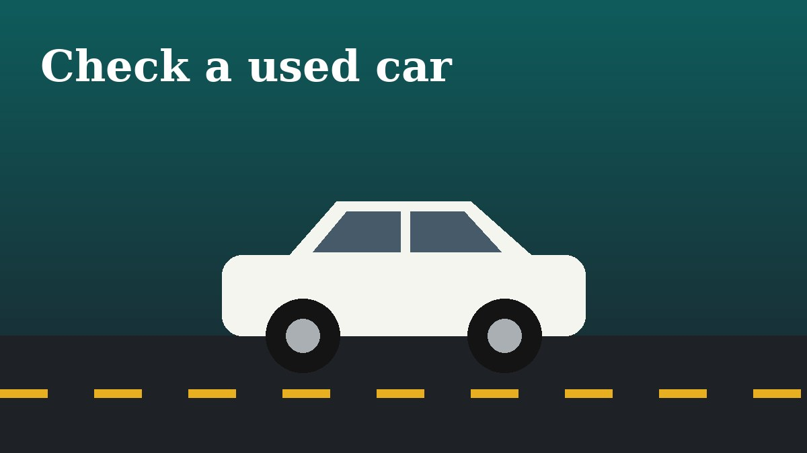

How to Check a Used Car Before You Buy It

Start with the paperwork. Ask for the service history, the registration papers and any accident records, and make sure the chassis number matches on every document. Gaps in servicing are a bigger warning sign than a high odometer reading.
Walk around the car in daylight. Uneven panel gaps, mismatched paint and overspray on rubber seals suggest past repairs. Check tire wear: uneven wear on one edge points to alignment or suspension problems.
Open the bonnet with the engine cold. Look for oil leaks, milky oil under the cap and a dirty coolant tank. On the test drive, listen for knocks, test the brakes firmly and check that the car tracks straight on a flat road.